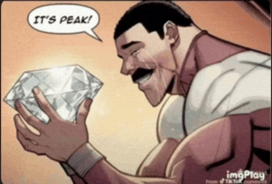

Homem Encontra Diamante Gigante e Decide Que Já Pode Parar de Trabalhar
Especialistas confirmam: felicidade foi encontrada, mas o salário continua o mesmo.

Um homem foi flagrado nesta terça-feira admirando um enorme diamante, aparentemente após descobrir que a pedra vale mais do que tudo que ele conseguiu juntar trabalhando honestamente.
Testemunhas afirmam que, ao perceber o tamanho da fortuna em suas mãos, ele teria pensado: "É o auge."
Infelizmente, a alegria durou pouco.
Minutos depois, o homem recebeu uma notificação do banco informando que sua conta continuava com R$ 37,42.
"Foi o momento mais feliz da minha vida. Até eu lembrar que o diamante não era meu", declarou, emocionado.
Especialistas fazem alerta
O caso também chamou a atenção de especialistas em economia, que fizeram uma importante recomendação:
"Não tente repetir. O diamante é caro e a prisão não oferece café grátis."
Até o fechamento desta reportagem, o homem continuava admirando a pedra, enquanto calculava mentalmente quantos boletos conseguiria pagar vendendo apenas uma lasquinha.
Fontes próximas afirmam que ele já está planejando abrir uma vaquinha para comprar o diamante.